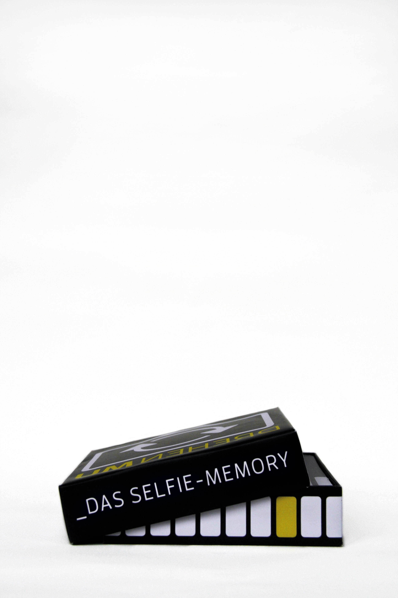
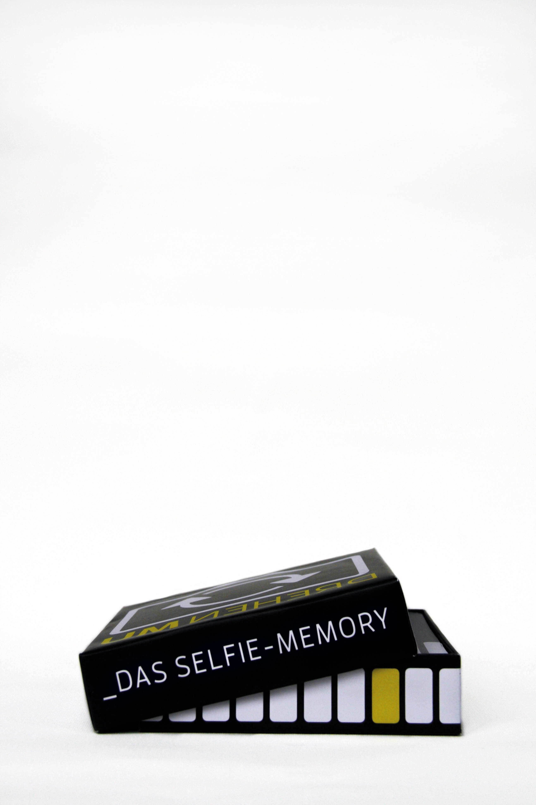

Hallo. Ich bin ein kleiner Blindtext.
Und zwar schon so lange ich denken kann. Es war nicht leicht zu verstehen,
was es bedeutet, ein blinder Text zu sein: Man macht keinen Sinn.
Wirklich keinen Sinn. Man wird zusammenhangslos eingeschoben und
umgedreht – und oftmals gar nicht erst gelesen. Aber bin ich allein deshalb
ein schlechterer Text als andere? Na gut, ich werde nie in den
Bestsellerlisten stehen. Aber andere Texte schaffen das auch nicht.
Und darum stört es mich nicht besonders blind zu sein. Und sollten Sie diese
Zeilen noch immer lesen, so habe ich als kleiner Blindtext etwas geschafft,
wovon all die richtigen und wichtigen Texte meist nur träumen.
 
